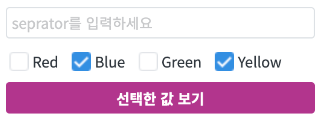
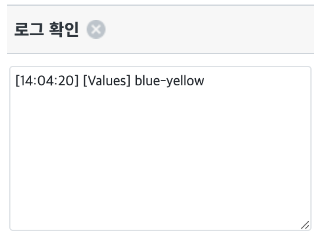
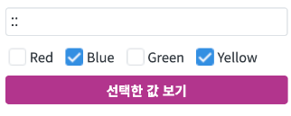
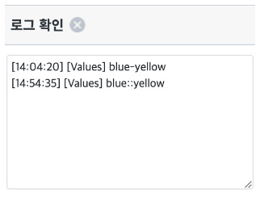
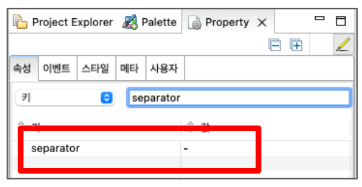
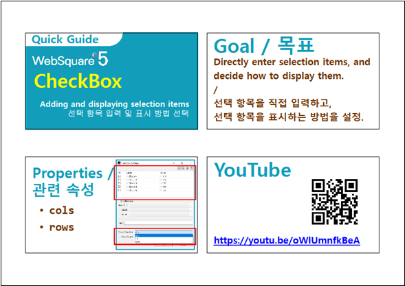

CheckBox의 선택된 값을 가져오는 예제입니다. 여러개의 값을 선택하는 경우 separator의 값을 구분자로 사용해서 출력합니다. 컴포넌트의 separator 값을 설정해서 defalut separator를 설정하거나 getValue를 호출 할 때 구분자로 사용할 문자열을 입력해서 변경할 수 있습니다.
속성 separator를 사용해 기본 구분자 설정하기
getValue로 구분자 지정해서 값 받기
항목을 선택하고 separator는 입력하지 않습니다.
그림 1.브라우저(Chrome) 실행 예시

separator를 입력하지 않았지만 예제는 separator 속성에 "-"를 설정해두어 "-"가 구분자로 사용됩니다.
그림 2.브라우저(Chrome) 실행 예시 - 필터가 적용된 DataList와 연결된 GridView

그림 3.브라우저(Chrome) 실행 예시

입력한 separator인 "::"가 구분자로 사용되서 표현되는것을 확인합니다.
그림 4.브라우저(Chrome) 실행 예시

Checkbox의 seperator 속성을 사용할 문자열로 설정합니다.
[필수] separator="사용할 문자열" //[default:" "(space), string] 기본 설정 값은 " "(space)고 사용할 문자열을 입력합니다. (예제에서는 "-" hyphen 사용)
그림 5.웹스퀘어5 SP5 스튜디오의 Property View(속성창) 예시

<!-- Checkbox 의 소스 본문 예시 --> <xf:select id="cbx_main" ... separator="-"> <!-- 중략 --> </xf:select>
이때, 입력 문자열이 존재하는 경우 separator의 문자열을 대신해 구분자로 사용합니다.
[필수] getValue(seprator) //[default:" "(space), string] 기본 설정 값은 " "(space)고 사용할 문자열을 입력합니다. (예제에서는 input을 통해 입력받은 문자열을 사용했습니다.)
<!-- CheckBox 의 소스 예시 -->
var _value = cbx_main.getValue("::");seprator
getValue(separator)
[웹스퀘어5 SP5 개발 가이드] CheckBox
링크 : https://docs1.inswave.com/sp5_user_guide/8df43d1f59fab704#27cc3703f47a5f30
CheckBox 가이드
링크 : https://youtu.be/oWlUmnfkBeA?si=sh8Dvgz3oBh4LgbU
